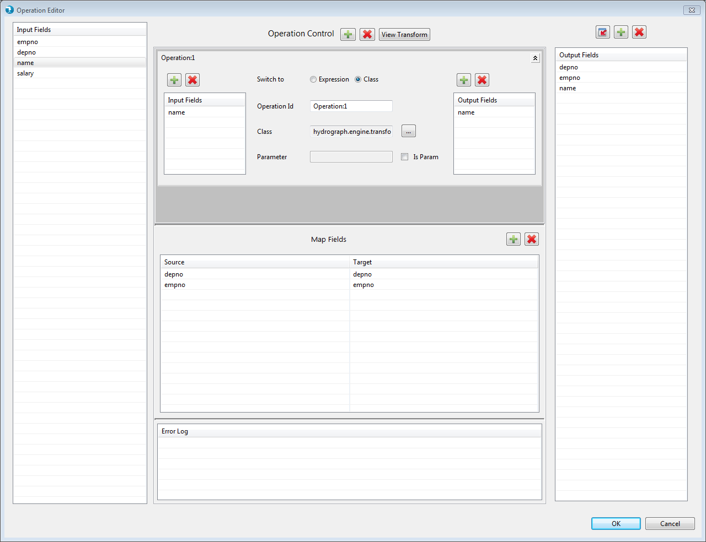
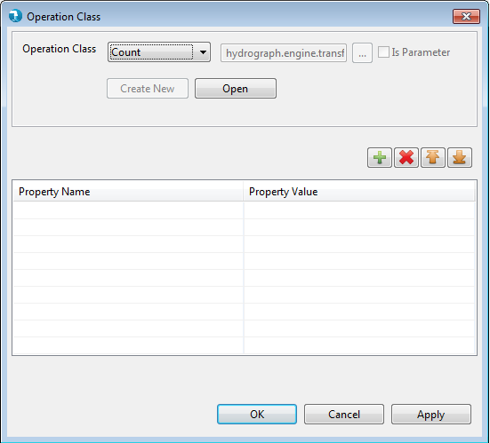

Aggregate Operation Editor
Operation editor for the Aggregate component can be viewed by clicking the Edit button next to Aggregate property on General tab. Input fields arriving from the input port are available in the input fields grid on the left.
The 'Operation Control' allows users to add multiple aggregation operations. Each operation is displayed in the window below 'Operation Control'.
Each operation has input fields and output fields.
Map Fields table in the bottom section allows user to specify pass-through and map fields.

Fig 1
Input Fields Grid
The input fields grid list all the fields available on the input port of the aggregate component. This list is populated automatically.
Operation Window
The operation window defines one aggregation operation. The aggregation operation has following fields (mandatory fields are marked in bold):

Fig 2
Map Fields
User can drag and drop single or multiple fields in the mapping grid. Alternatively, user can also use the 'add', 'delete' buttons above the map fields grid to add or delete fields manually. The fields that are passed as-is in the output are pass-through fields. Whereas, fields renamed in the output are map fields.Output Fields
The output fields grid contains the operation output fields of all the operations as well pass-through and map fields. The operation output fields, pass-through fields and map fields are automatically added in the output fields grid.
User can also opt to pull the schema from the schema tab (i.e. the out port of aggregate component). The current list of fields in output fields gird is overwritten with the fields in schema tab.
If there are new fields schema tab that are not available in any of the operation output or map fields, a new entry is added in map fields grid with the new field name as target and a blank source field.
If the fields currently present in output fields list, which either came from operation output fields or from pass-through or map fields, are not present in the schema tab, those fields are deleted from the output fields list. Their corresponding entries in either operation output fields grid or map fields grid are also deleted.